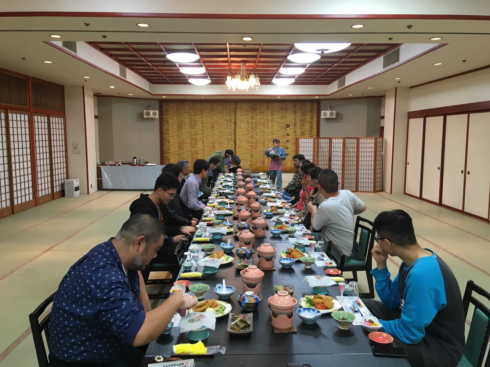
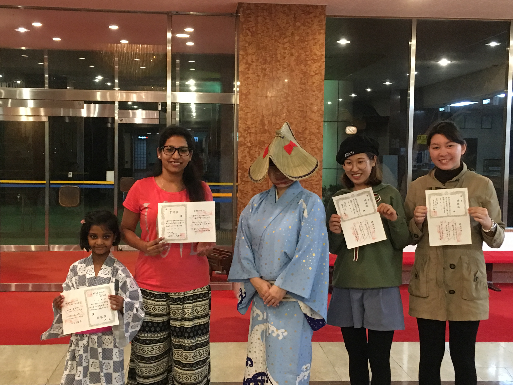
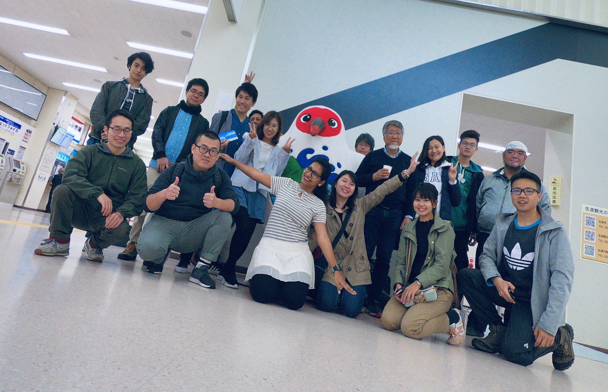
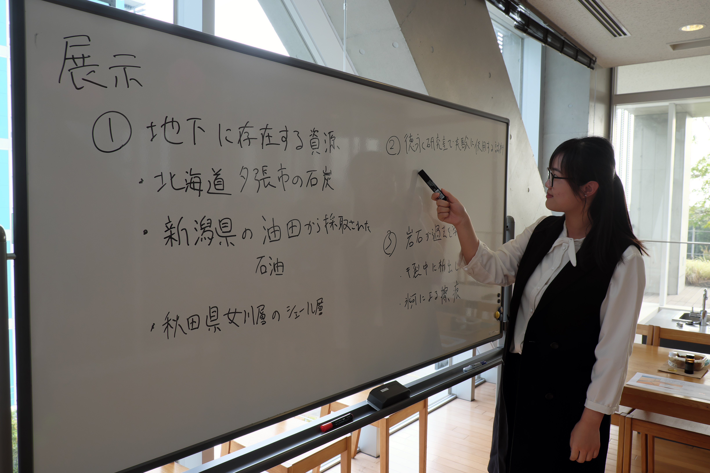

Field excursion to the Sado Island, Niigata Prefecture on 12-13, November 2018
18 lab-members in total visited the Sado Island, Niigata Prefecture for the field excursion during 12th and 13th, November 2018.
The Sado Island is one of the largest island in Japan, and is famous for its gold and silver mine; we visited during this field excursion. We have closely looked at the pillow shape basalt, which is formed through rapid heating and cooling during the flow, on the offshore of Japan Sea.
On the next day, we visited the natural gas and oil company in the Niigata station. The specific gas producing formation in Niigata prefecture and the related environmental considerations, such as land subsidence, are investigated.
More photos in the field excursion are shown in Activities.



Welcome party for the new students in October 2018
We held a welcome party in a restaurant near the TX Kashiwanoha-campus station. Two new research students are: Nelissa and Bin Chen, and one PhD candidate: Takuro Okajima. The photos of the welcome party are displayed below.
Open Campus of the University of Tokyo, Kashiwa Campus
On 26 and 27 October, 2018, the open campus activities were held at the Kashiwa campus, the University of Tokyo. Our Geosphere Environmental laboratory displayed the poster and showed some experiments. The photos show the activities.
More information are available in the website in the University of Tokyo.

2018 GSA Bridsall Dreiss Distinguished Lecture
The Birdsall-Driess Distinguished lecture 2018 by GSA was here given by Associate Professor David Bouutt from Department of Geosciences, University of Massachusetts-Amherst. The lecture discussed "The role of inter-basin groundwater flow and hydrogeological processes".
More information are available in Japanese Association of Groundwater Hydrology